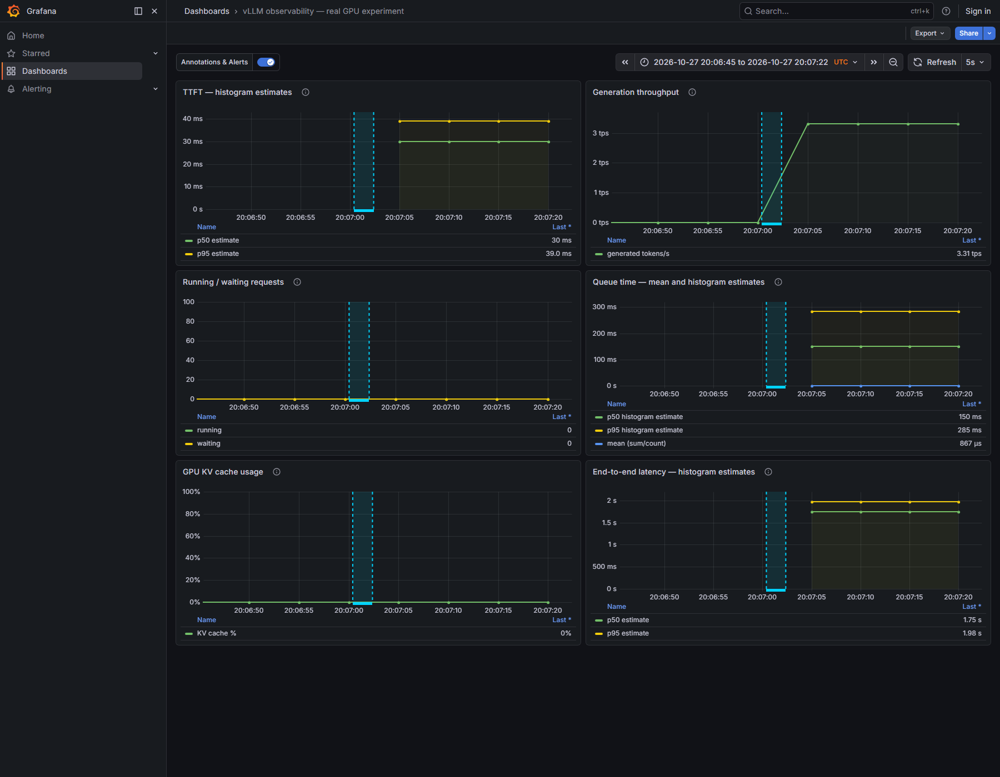
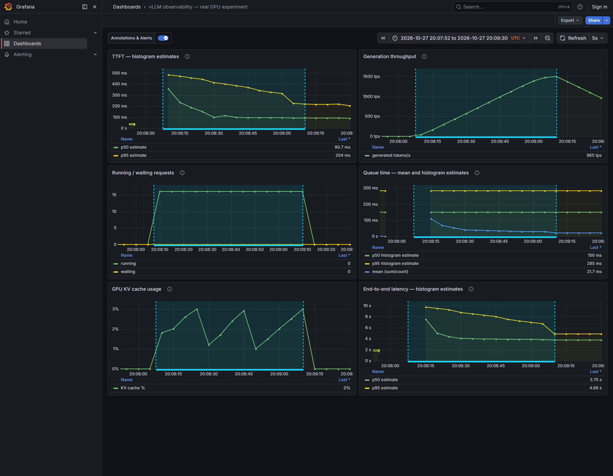
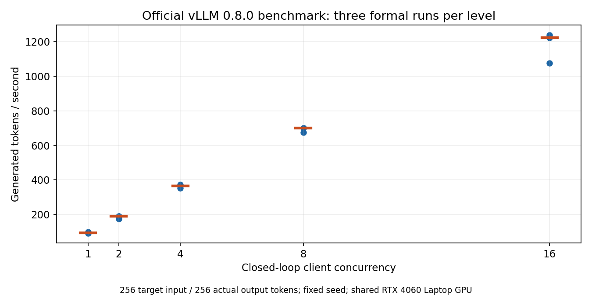
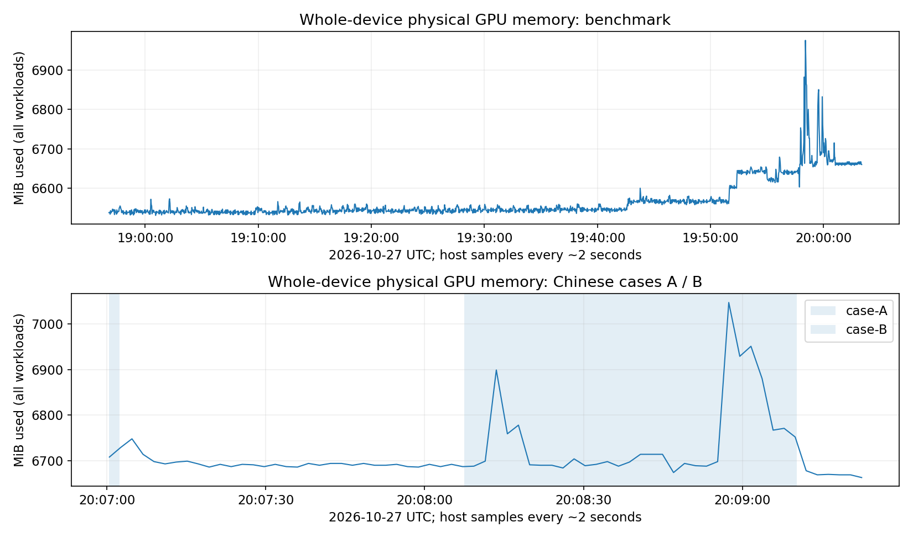

vLLM 本地 GPU 实验：请求、回答与监控证据
本页是由原始数据生成的离线证据报告。记录 2026-10-27 实测：本地 Qwen2.5-0.5B-Instruct 经 vLLM 生成回答，Prometheus 采样，Grafana 展示。API 与监控链路通过；回答有指令遵循和截断问题，不能据此声称模型质量合格。
固定环境：vLLM 0.8.0 V0，模型 revision 7ae557604adf67be50417f59c2c2f167def9a775；FP16、上下文 2048、gpu-memory-utilization=0.5、max-num-seqs=16。宿主为共享 RTX 4060 Laptop GPU，其他原有工作负载保持运行。
固定部署配置
首次中文请求与监控
A/B 使用不同 prompt、不同输出上限，是功能与可观测性演示；不能仅凭两例延迟差推断并发的因果效果。控制负载的量化比较见下方官方 15 轮。所有首次响应均保留，未为得到更好回答重试。
Case A：单次请求
2026-10-27T20:07:00.403549+00:00 → 2026-10-27T20:07:02.384786+00:00（UTC）
输入 prompt：
请用中文列出 HTTP 状态码 200、404、500 各自的含义，每个状态码一句话。
首次实际回答（原文）：
HTTP状态码是用于标识请求和响应的不同类型和内容的一种标准。以下是HTTP状态码的定义及其含义：
1. **200 OK**：表示请求成功，并且服务器已经收到并处理了请求。
- 意义：表示请求成功，服务器已接收并处理了请求。
2. **404 Not Found**：表示请求的资源（如网页、文件等）不存在或不可达。
- 意义：表示请求的资源没有找到，或者请求的资源无法访问。
3. **500 Internal Server Error**：表示服务器内部发生错误，导致请求被拒绝。
- 意义：表示服务器内部发生了问题，导致请求被拒绝，需要重新尝试。
这些状态码在实际应用中非常有用，它们帮助开发者了解请求的状态，以便做出相应的调整和优化。
HTTP 200 数量 1/1；finish_reason={'stop': 1}；总输出 182 tokens；阶段 1.981s；客户端完成延迟中位数 1.982s。temperature=0、seed=0、max_tokens=256；完整逐请求数据见链接。
监控观测（5 秒步长）：请求区间短于采样步长，区间内没有 range 评估点，不能得到 running/waiting/KV 的阶段峰值；原始队列 sum/count 差分均值 0.867ms（1 次观察）。未获得阶段峰值；队列均值来自请求前后计数差。
人工观察：200/404/500 的核心含义大致对应，但每码多行，未遵守一句话要求；404 的‘不可达/无法访问’和 500 的‘请求被拒绝/需要重新尝试’表述过宽。不能从 500 单独推断重试会成功。
完整 payload、所有原始响应、finish_reason、UTC 与客户端时间

真实 Grafana Case A，绝对 UTC 时间窗、六面板及阶段 annotation；点击原图查看。
Case B：C16 持续请求
2026-10-27T20:08:07.531327+00:00 → 2026-10-27T20:09:10.240279+00:00（UTC）
输入 prompt：
请用中文为一个由 React 前端、Python 后端和 SQLite 数据库组成的小型语言模型对比平台编写操作手册。按 1 到 10 编号，依次说明输入提示词、同时请求两个模型、等待结果、比较回答、投票、保存记录、查看排行榜、查看个人历史、处理模型错误、保护密钥。每一步写出用户操作和系统行为，最后解释为什么回答质量和生成速度需要分别评价。
首次实际回答（原文）：
### 操作手册
#### 第一章：欢迎使用小语言模型对比平台
**步骤 1: 登录**
- 输入用户名和密码登录平台。
**步骤 2: 创建账户**
- 如果您还没有账号，请创建一个新的。
- 确认您的信息无误后，点击“提交”。
**步骤 3: 查看排行榜**
- 在首页，您可以看到所有用户的排名。
- 可以通过点击“查看排行榜”按钮来查看最新的排名数据。
**步骤 4: 查看个人历史**
- 在主页上，您可以查看自己过去的对话记录。
- 这里包括了您与不同用户进行的对话次数以及每个用户的回复时间。
**步骤 5: 处理模型错误**
- 当遇到无法理解或不准确的回答时，可以尝试重新提问。
- 如果问题依然无法解决，可以向管理员反馈。
**步骤 6: 保护密钥**
- 使用此功能可以确保您的账号安全，防止他人未经授权访问您的数据。
**步骤 7: 资源管理**
- 在这里，您可以添加新的用户、修改现有用户的信息等。
**步骤 8: 关闭账户**
- 如果您不再需要该服务，可以选择关闭您的账户。
**步骤 9: 返回主页**
- 返回到首页，继续享受您的对话体验。
**步骤 10: 结束**
- 欢迎再次使用，如果您有任何其他问题，请随时联系我们。
---
### 第二章：如何使用React前端
**步骤 1: 安装React**
- 下载并安装最新版本的React。
**步骤 2: 创建项目**
- 使用命令行工具（如npm）创建一个新的React应用项目。
**步骤 3: 添加组件**
- 在项目目录中创建一个新的文件夹，并在其中创建一个名为`App.js`
HTTP 200 数量 240/240；finish_reason={'length': 240}；总输出 92160 tokens；阶段 62.709s；客户端完成延迟中位数 4.121s。temperature=0、seed=0、max_tokens=384；完整逐请求数据见链接。
监控观测（5 秒步长）：running 最大值 16.0、waiting 最大值 0.0、KV 使用率最大值 3.014%；原始队列 sum/count 差分均值 27.908ms（240 次观察）。这些 gauge 最大值仅代表采样观察，不是连续时间真实峰值；未观察到 waiting 不代表从未排队。
人工观察：首例自行加入登录、账户管理等未要求内容，没有按指定操作顺序回答，随后进入 React 安装章节并在输出上限处截断，未给出最后的质量/速度解释。此处只检查直接可见的内容、格式与截断，未做全面质量评测。
完整 payload、所有原始响应、finish_reason、UTC 与客户端时间

真实 Grafana Case B，绝对 UTC 时间窗、六面板及阶段 annotation；点击原图查看。
截图直接来自真实 Grafana。截图范围由对应请求起止前后留白构成，dashboard timezone=UTC，查询与截图绝对 URL 均已保存。无请求时的直方图分位数保留 NaN/空白，没有补成 0。A 是稀疏单请求，1 分钟 token rate 会被时间窗摊薄，不能与 182 tokens / 1.98s 的客户端阶段平均直接相比。
截图 UTC 范围与真实 dashboard URL
B 结束后固定时间点六面板原始 PromQL 及响应
A/B 原始 Prometheus range 数据
A/B 统计与监控差分
固定负载的并发比较
官方 vLLM v0.8.0 未修改脚本，固定 seed=0；目标输入 256 tokens、实际输出固定 256 tokens、ignore-eos、每档预热 10 请求。并发 1/2/4/8/16，各 3 轮，每轮至少 200 请求和 60 秒。已重新读取 15 份 official.json 核对：3,339 正式请求均成功，854,784 输出 tokens，所有输出长度为 256。
| 并发 | 每轮请求 | 吞吐范围 tok/s | 吞吐中位数 tok/s | 各轮p95 TTFT中位数 ms | 各轮p95 E2E中位数 ms |
|---|
| 1 | 200 | 92.0–98.8 | 93.2 | 58.5 | 3062.0 |
| 2 | 200 | 174.5–190.9 | 190.6 | 89.9 | 3003.3 |
| 4 | 200 | 353.7–371.8 | 364.5 | 107.5 | 3174.9 |
| 8 | 200 | 675.6–700.8 | 700.5 | 151.6 | 3347.1 |
| 16 | 313 | 1075.5–1238.7 | 1222.6 | 244.3 | 3596.0 |

蓝点为每轮结果，红横线为三轮中位数；数据来自 official.json；点击原图查看。
在这组固定工作负载下，吞吐随并发增加。C16 吞吐仍有轮间波动；这些数据不证明服务已经达到最大容量。TTFT 与 E2E 是官方客户端样本统计，表中是各轮 p95 的中位数，未把三轮混合后重算 p95。
这是闭环饱和负载，客户端 semaphore 限制在途请求；TTFT 从取得客户端槽位后计时，不含等槽时间。正式 duration 作为吞吐分母；UTC envelope 还包含容器启动、导入、tokenizer 加载和初始测试，仅用于定位。每次官方调用另有 1 条不计正式的初始请求。C16 的 200 请求 / 44.744s 是 probe，正式三轮改为各 313 请求。
输入长度 256 是 synthetic 名义目标，文本 decode/retokenize 后服务端可能不同；保存的实际样例为 269 prompt tokens。官方 chunk 间隔不保证每 chunk 一个 token。本配置未开启 chunked prefill，连续批处理不证明 prefill/decode 混合批次。较早 185309Z 运行在依赖导入阶段失败，已进行 health/models 读取，但未发送生成请求、未进入正式负载；保留证据但未计入成功结果。
全阶段 summary.csv
所有阶段与 official.json 路径
正式请求验证摘要
宿主 GPU 显存

宿主 nvidia-smi 全设备物理显存时间曲线；点击原图查看。
官方压测 GPU CSV 观察到 6,531–6,975 MiB，全设备含其他程序；这不是 vLLM 进程独占显存。vLLM 预分配 KV 存储，物理显存与 KV 块使用百分比不同。CSV 约 2 秒采样，可能遗漏短峰值。
压测原始 GPU CSV
中文案例原始 GPU CSV
三服务重启与持久性
| 检查 | 实测结果 |
|---|
| verified_at_utc | 2026-10-27T20:12:47.899824+00:00 |
| same_container_ids | True |
| same_mounts | True |
| all_started_at_changed | True |
| same_cache_file_sizes_mtimes_targets | True |
| same_fixed_model | True |
| same_historical_prometheus_response | True |
| same_dashboard | True |
| same_annotations | True |
| healthy_api_grafana_prometheus_target | True |
请求结束后只执行本 compose project 的 vllm、prometheus、grafana restart；未停止其他项目。重启前后保存容器 ID/StartedAt、Mounts 和 volume inspect 的非密钥字段。固定 revision 缓存文件的真实路径、大小和 mtime 保持相同；重启日志显示模型加载成功。它证明复用现存 snapshot 并成功启动，不是离线网络封锁测试。Prometheus 旧 UTC 区间返回完全相同；Grafana dashboard 与 annotations 保持相同。重启后 API、Grafana 数据库及 Prometheus target 均恢复健康，三服务继续运行。
检查脚本初次逐数组比对 Mounts 时报告 false；原始文件显示只发生了 Grafana Mounts 顺序变化。改为按 Destination 排序比对后为 true，初次结果保留为 restart-initial-verification.json，没有再次重启。截图时普通 Chromium launcher 返回 spawn UNKNOWN，已安装的 Chromium headless shell 可启动并用于真实截图；普通 launcher 失败原因未独立确认。
重启前：缓存、旧范围、dashboard、annotations
重启后：相同检查
重启前容器及挂载（未保存环境变量）
重启后容器及挂载（未保存环境变量）
重启逐项比对
重启 vLLM 原始日志
结论的边界
Prometheus 每 5 秒采样；Grafana 的 rate/分位数使用滚动 1 分钟，临近阶段会混入同一窗口。直方图分位数是桶插值，队列首桶 0.3s；样本全在首桶时 p50≈0.15s、p95≈0.285s 不是真实排队延迟。低延迟队列优先看 sum/count 均值；该均值也不是分位数。
宿主共享、GPU CSV 含其他程序；观测并非生产 SLA 或开环可持续容量。电源状态只在压测中途检查一次，不能推断全程不变。早先 CUDA 分配失败与宿主 commit 压力/WSL 缓存有关的观察保留；drop_caches 后成功不能独立证明根因。未更改驱动、pagefile 或 WSL 配置。
已验证的是：GPU 生成/API、Prometheus/Grafana 链路、固定负载压测、真实截图关联、三服务重启与数据留存。未验证的是：通用回答质量、生产负载能力和首次 CUDA 分配失败根因。若继续，优先增加代表性任务与人工质量评测，再做可控到达率/更长持续时段测试；当前不增加这些范围。